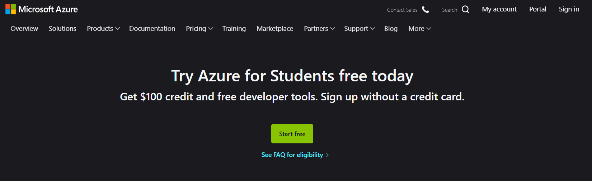
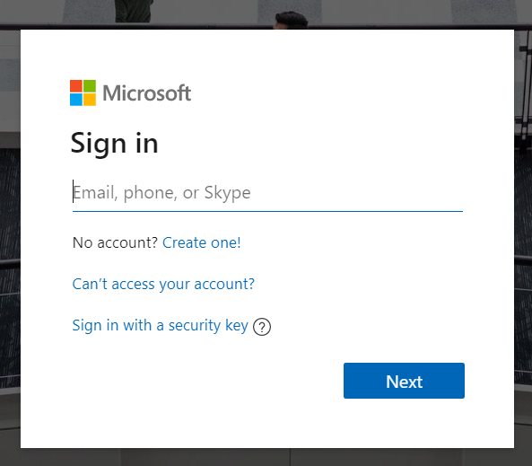
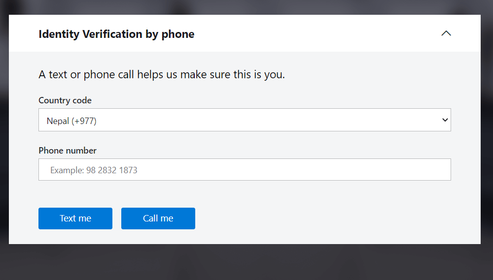
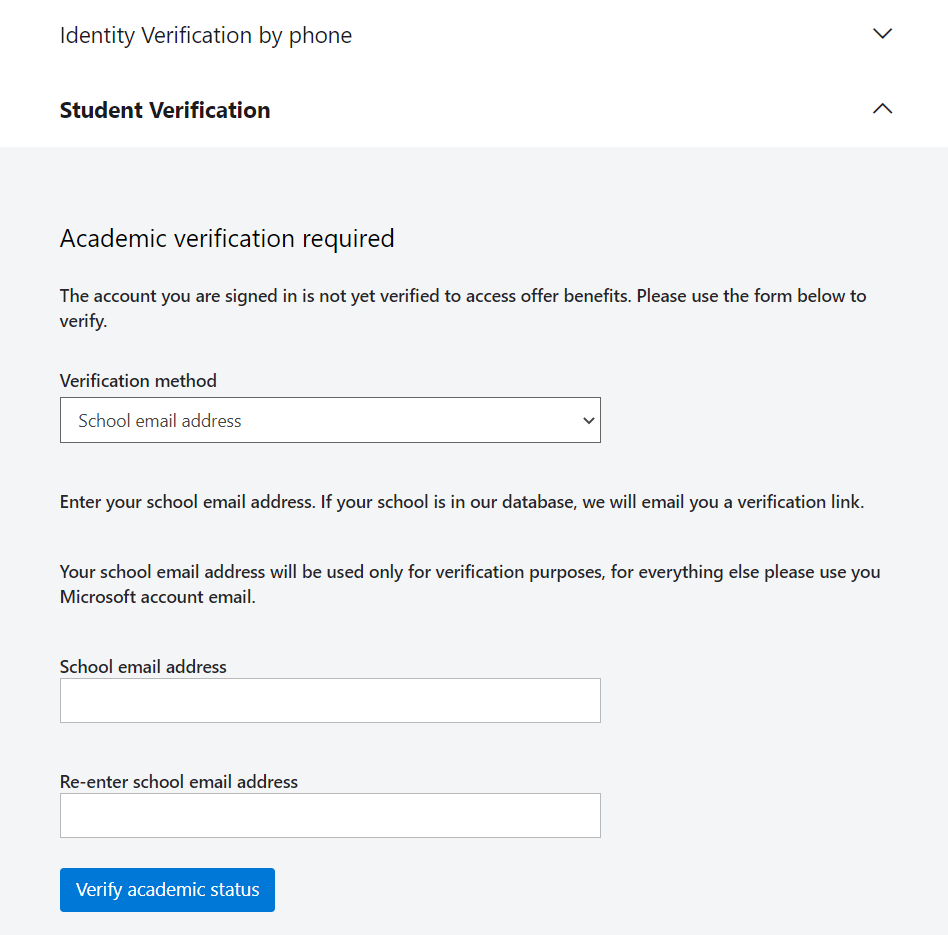
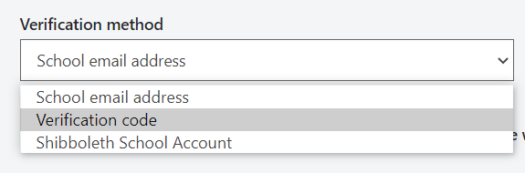
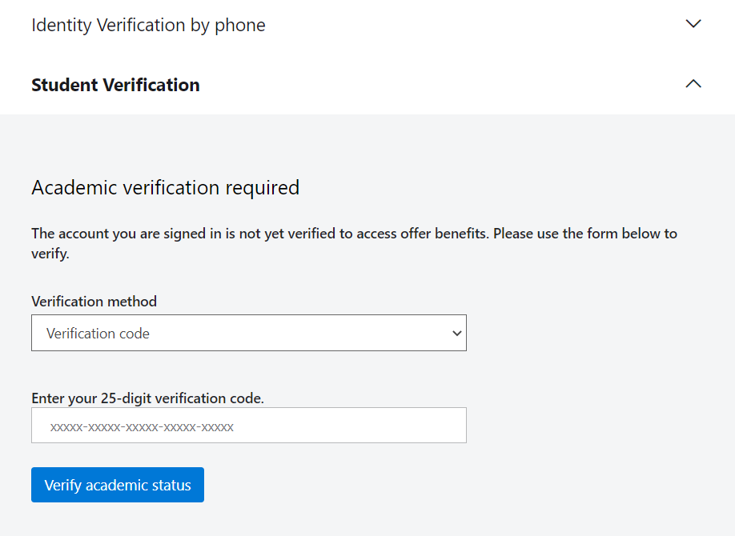
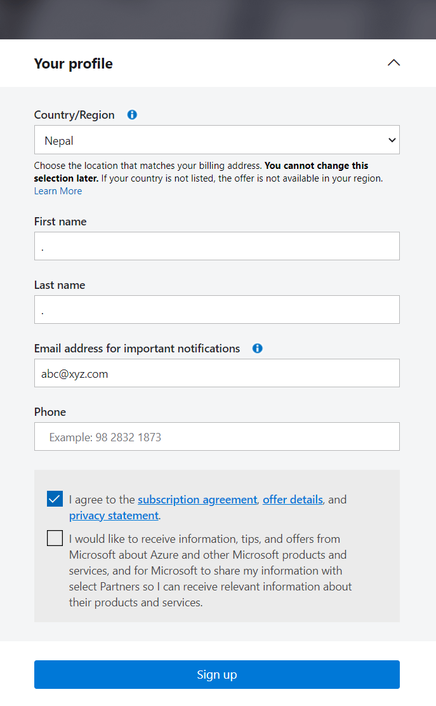
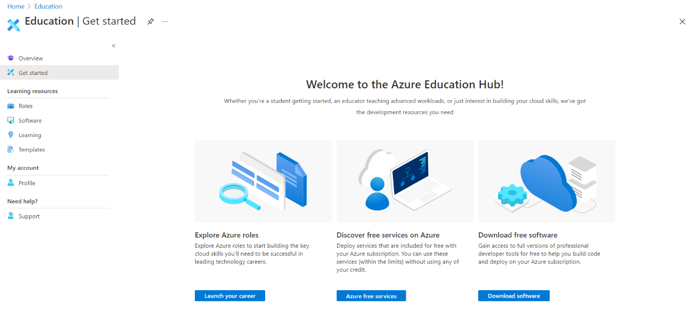
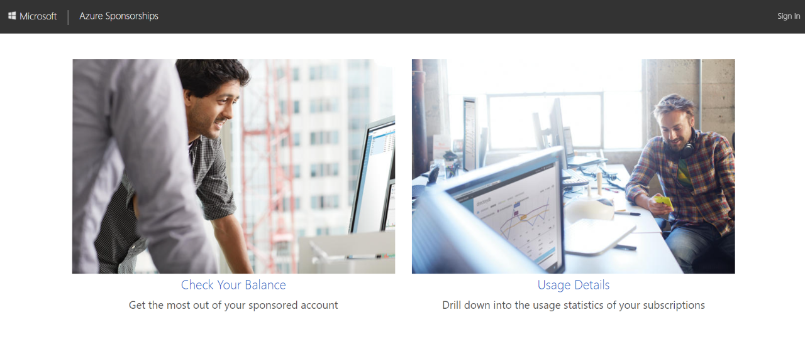
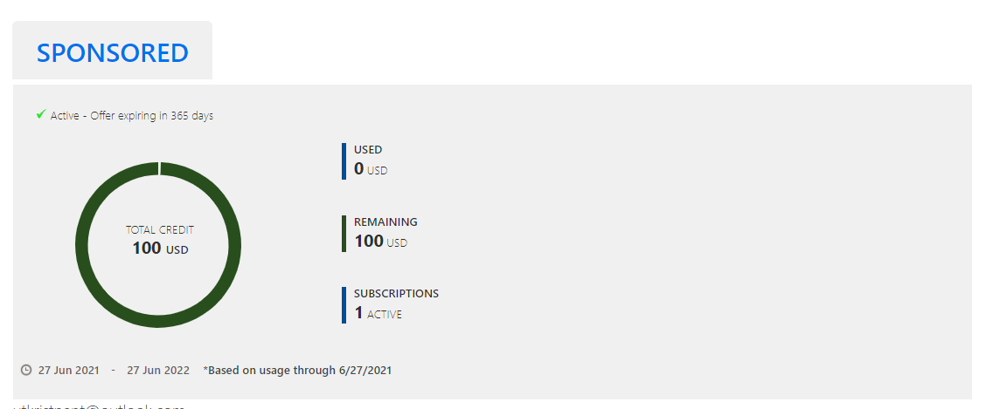

Azure Verification Keys Activation Guide
AI Gaming TU - Nagarjuna
This is a guide for activating the Azure For Students subscription with verification keys provided to you.
STEP 1: You need a Microsoft account. If you don't have one, go to Account SignUp page to create an account.
STEP 2: Once you have your Microsoft account, head on to Azure for Students.

Once you see this window, click Start Free.
STEP 3: User your Microsoft account credentials to sign in.

STEP 4: Enter your phone number and verify via "Text me" option.

STEP 5: After verification, you should see this window.

In the "Verification Method", choose Verification Code.

Enter the verification key provided to you in the box below.

Once that is done, click "Verify academic status".You will be redirected to this form.

Enter your First Name, Last Name, Email, and Phone number. Tick on the first checkbox to agree to the agreements and then hit "Sign Up".
You will then be redirected to the Azure Portal with the page below.

STEP 6: Once the Azure Portal is loaded, open a new tab on your browser and enter Azure Sponsorships.

Click on "Check Your Balance"

You should see this page with Total Credit 100 USD.
Once you see this, you have successfully activated your Azure Student Account and claimed the 100 USD with which you can do amazing stuff on Azure.
Please make sure to activate your Azure Subscription before joining the session tomorrow for added ease. Thank you so much for your cooperation